平台与账号策略
根据业务类型与人群确定主阵地、账号角色和内容方向，避免多平台平均用力。
把每项工作说清楚，你才知道钱花在哪里、结果怎么看。
根据业务类型与人群确定主阵地、账号角色和内容方向，避免多平台平均用力。
建立选题库与内容栏目，覆盖认知、信任与转化不同阶段的信息需求。
及时回应咨询与评论，沉淀常见问答，把互动转化成下一次沟通的机会。
自然内容与付费推广互相配合，按数据调整内容方向与投放重点。

账号做不起来，通常不是更新不够多，而是方向不清、内容分散、没有承接。
流程不是形式，是为了让双方对进度和结果有一致的预期。
先弄清业务目标、现有资源与约束条件，确认要解决的问题是什么。
基于目标给出服务组合、实施范围与排期，明确交付物与验收标准。
按确认的方案分阶段推进，关键节点同步进度，问题及时暴露。
上线前逐项核对功能、内容与兼容表现，确认无误后再切换。
根据真实反馈和使用数据调整细节，让投入持续产生效果。
这里整理了咨询中出现频率较高的问题。如果你的情况比较特殊，欢迎直接联系我们。
告诉我们你现在的处境和目标，我们会判断这项服务是否真的适合你，而不是一律推荐。
取决于目标人群和业务类型。面向国内商务人群，微信公众号适合深度内容与关系沉淀，小红书适合种草与搜索，抖音适合可视化展示与扩散。建议先集中做一到两个平台，跑通后再扩展。
可以。产品信息、客户问题、服务过程、行业观察都可以成为选题。我们会先梳理可复用素材与信息源，建立选题库，降低日常创作压力。
稳定比高频更重要。建议根据实际制作能力设定可持续的节奏，宁可每周固定更新两篇有质量的内容，也不要集中发布后长期断更。
能，但路径通常不是一步到位。内容先建立认知与信任，再通过私信、表单或企业微信承接咨询。承接流程设计得好，社媒线索才不会被浪费。
可以按约定范围负责内容策划、撰写与发布，也可以只提供策略和选题，由内部团队执行。具体分工会在项目开始时明确。